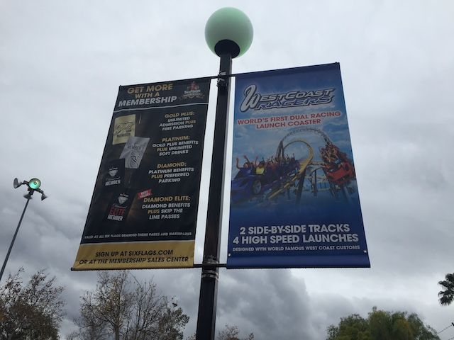
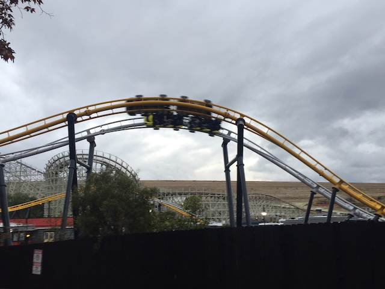
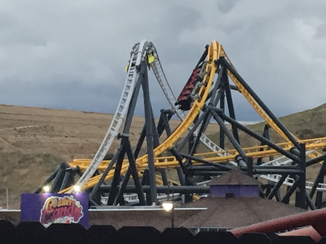
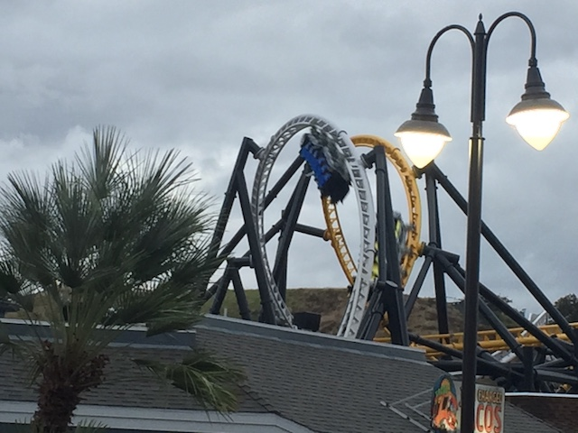
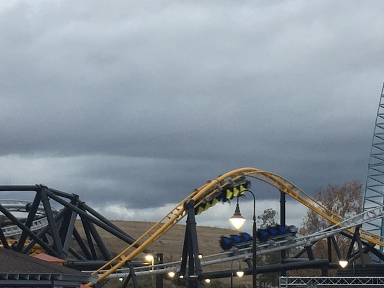
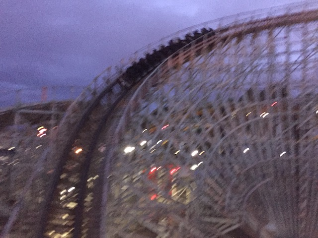

| |
West Coast Racers Preview

All right. So for those of you who have been living in a cave for the past year and a half, Six Flags Magic Mountain has been working on a brand new Premier launched coaster called West Coast Racers. However, the ride was very slow to being built. While other new for 2019 coasters were opening, such as Tigris, Yukon Striker, and Copperhead Strike (Very fun ride BTW), West Coast Racers hadn't even gone vertical. The ride started going vertical around August, around the same time the new 2020 coasters. By this point, I was convinced that West Coast Racers was going to open in 2020, and that was the big debate. And...I was sort of right and sort of wrong. While the ride officially opened in early January of 2020, so I was right! However, much like X did when it first opened, it soft opened around Christmas Time. And that brings us to today, where we're at the park to ride West Coast Racers. So I was wrong in predicting that I wouldn't ride it til 2020 since....I rode it in very late 2019.
So this years Holiday in the Park Update isn't just special because we also get a sneak peek at West Coast Racers today. No, this years was more Christmasy to other years (I forgoed a Holiday in the Park update last year not because I didn't do it last year, but because I didn't feel like it would've been special enough to distract me from the giant load of Japan Updates I had on my plate then) for one simple reason. We're here on Christmas F*cking Day! Yeah. I had no idea I would wind up here on Christmas. Started out like any ordinary Christmas. Opened presents (got everything I expected. I'm not easy to shop for), had breakfast, hung out with family, watched Elf, then got a text from Evan. He was gonna be at SFMM today to get on West Coast Racers. Do I wanna join? Sure, why not. So Jason and I head out to Six Flags Magic Mountain and...here we are.
Ooh! Holiday in the Park is also throwing in a food festival as well! With the success of the Boysenberry Festival (as well as Food & Wine at Epcot), Food Festivals at theme parks have been extremely popular. Which...I LOVE this park trend almost as much as the rise of RMCs. I've done Boysenberry Festival every year, Brew & BBQ @ Cedar Point, the Seven Seas Food Festival @ Sea World San Diego, and now I can add #4. The Holiday in the Park Food Festival to the list today.
Hmm. Not a bad menu. I see a couple things on that menu that I look foreward to trying.
♫Oh what fun it is to ride in a no horse open sleigh♫
Ooh! This event is so mystical that it actually got it to snow here in SoCal.
"All I got for Christmas was this Coke. This sucks."
OK. No more beating around the bush. Time to do exactly what we came to this park for!
 Yep! We got our season passes out, and we're FINALLY about to ride West Coast Racers!
Yep! We got our season passes out, and we're FINALLY about to ride West Coast Racers!
 So West Coast Racers is....fun. Yeah. That's the best way to describe it.
So West Coast Racers is....fun. Yeah. That's the best way to describe it.

You know, it's funny. I remember being so intrigued by the High Five. Only one of its kind in the world (on that one woodie in China). Now there are only three in the world. Two of them are at SFMM! Twisted Colossus, and now West Coast Racers.

None of the elements are particuarly intense. The inversions are floaty, but fun. There's some airtime, but it's mild. But it's just a really fun ride.
 I know I initally called this the love-child of Twisted Colossus and Full Throttle due to it stealing elements from both, but...it's a lot less like both rides than I initially thought.
I know I initally called this the love-child of Twisted Colossus and Full Throttle due to it stealing elements from both, but...it's a lot less like both rides than I initially thought.

There may not be a ton of whip to these inversions, but they're just a lot of fun to go through.

Of course, the best part of the ride would be the racing. And I really love the fact that Six Flags made the racing automatic. Partially since if they have slow operations, more time spent looking at West Coast Custom ads (more on that later). But the way they synchornize the trains so they always race, LOVE THAT!!! Only other coaster they did that for was Dueling Dragons before they reversed and neutered the ride before eventually murdering it. ='(
One thing to note about the ride is the fact that it's sponsered by West Coast Customs, a car company that is primarily known for fixing up cars, and mainly "PIMP MY RIDE!!!". I don't give a f*ck about them, but hey. I now know who they are because of this coaster. So...I guess the marketing worked. Hey, at least I got a cool new coaster out of it.
YES!!! I LOVE THIS!!! Thank you for continuing the zippered pouch trend on West Coast Racers! =)
OK. One annoying thing is that the ride does have comfort collars. Not a huge deal since...they mostly can be ignored. But it's still midly annoying.
 For more thoughts on West Coast Racers, check out my review of it. But all in all, I really like West Coast Racers and give it a big thumbs up and recommend riding it while at SFMM.
For more thoughts on West Coast Racers, check out my review of it. But all in all, I really like West Coast Racers and give it a big thumbs up and recommend riding it while at SFMM.
 Hey, it was closed for most of the year. And we're right here. We should probably give this a ride.
Hey, it was closed for most of the year. And we're right here. We should probably give this a ride.
Poor folks. Even on Christmas, they still have to fight that forever pointless war.
 Clearly, you can see that going to Six Flags Magic Mountain on Christmas is a very popular thing to do.
Clearly, you can see that going to Six Flags Magic Mountain on Christmas is a very popular thing to do.

One of the weaker GCIs, but the giant retracking it got during West Coast Racer's construction really helped the ride.
All right. Time to get eating at this food festival.
OK. First up, the Elote. Good, but not nearly as good as the Boysenberry Elote from the Boysenberry Festival. Also, it's much more fun to eat on a stick (creates less trash too).
And we have Peppermint Fried Oreos. They may be standard and common thanks to Fairs, but they're still really good. Love Deep Fried Oreos.
Oh yeah. Forgot that this was a Holiday in the Park update. So here's more of their pretty Christmas lights.
Nah, Just kidding. Here's another roller coaster photo.
Best Christmas Present ever (aside from the season passes of course)!
 All right. Time for some more Holiday in the Park Food Festival Food.
All right. Time for some more Holiday in the Park Food Festival Food.
Sadly, they were sold out of the Pumpkin Pie Memories. So none of that today. =(
First up, we have the Spicy Cranberry Pulled Pork Sliders. It was good. Not a huge fan of pulled pork, or cranberries. But it was still good.
Next food item, we have the Maple Cranberry Meatless Meatballs. You know, with the rise of Beyond Meat and Impossible Meat, fake meat finally tastes....like meat! Not the pity patty taste that they served to vegetarians forever so they wouldn't feel lonely at BBQs, an honest to god, actually tastes like meat, plant-based meat. Considering how meat contributes to climate change and anti-biotic resistance, I STRONGLY support them (I may be a HARDCORE Carnivore who loves meat, but f*ck those two things! Stopping those is a good thing!). This is not that. This is that pity patty that was a thing for so long. Hey, you ever think of parterning with Beyond or Impossible Six Flags? It'll make your vegetarian options MUCH better. ;) Sauce is good at least.
And finally, we have the Tangy Peach Ribs! Now THIS is my kind of food! Love ribs! Love peach stuff! Love BBQ! Mix it all together and....Delicous! Best thing I had at the Food Festival (though I never got a chance to eat my most sought after foods though).
Love how Crazanity just becomes part of Holiday in the Park (and of course, riding it is great).
All right. Time to just take in all the pretty Christmas Lights.
Sure, this is nothing compared to the amazing events put on by Tobu Zoo and Yomiuriland, but this is still enjoyable.
Even Superman and Lex Luthor can put aside their differences and just enjoy the holidays.
"Come on! We gotta get back up to the North Pole now! MUSH!!!"
And of course, we have to take advantage of these Christmas crowds to get lots of rides on one of the best rides in the country while we're here.
 ♫All I want for Christmas is my RMC.♫
♫All I want for Christmas is my RMC.♫
OK. I have to rant about one thing. They close the Food Festival 2 hours before the park closes. Uh....WHAT!!? Yeah. They decided to not allow any Food Festival food 2 hours early. WHY!!!? I get that today is Christmas, and....closing the park early, I get that. Employees have to go home. I was once a SFMM Employee. But the employees were there. Bored. Their job seemed to be to tell people that the food festival is closed. WHY!!? WHY ARE YOU CLOSING THE FOOD FESTIVAL TWO HOURS EARLY!!? AND THERE'S LITTLE NOTIFICATION!!! I mean, there were no "CLOSING EARLY" signs at any places. I think it was mentioned once on the initial menu we saw (it's even in the photo). Just barely enough notice to not have me lodge a formal complaint (Plus, I REALLY don't like lodging in-person complaints (online however, I'll gladly rant). You have to be Red Carpet Inn bad before I actually lodge in-person complaints). But....WHY!!!? I can't think of any good reasons for closing it early, especially if it's not for allowing the employees to go home early for Christmas. Yeah. This really pissed me off at the time since...we have a lot more food ticket vouchers that have to go to waste since....I can't come back here. I have to work all those days! Not to mention, it was apparently MOBBED those days. Which is a shame, because the food festival itself was the best SFMM has been in the dining department, possibly ever. But yeah. That really soured the event for me.
 Well, at least riding X2 always gets me out of a bad mood.
Well, at least riding X2 always gets me out of a bad mood.
 And that was this years Holiday in the Park as well as our chance at checking out West Coast Racers during its soft opening. West Coast Racers is a very fun ride that fits in nicely with the rest of SFMMs coaster collection. The Food Festival was really good, having some pretty good food offerings. And the rest of Holiday in the Park was a lot of fun, with some cool Christmas Lights. Honestly, the only problem was the food festival closing early. Other than that, everything else was great. Fix that, and you'd have a great event that I hope sticks around Six Flags Magic Mountain for years to come.
And that was this years Holiday in the Park as well as our chance at checking out West Coast Racers during its soft opening. West Coast Racers is a very fun ride that fits in nicely with the rest of SFMMs coaster collection. The Food Festival was really good, having some pretty good food offerings. And the rest of Holiday in the Park was a lot of fun, with some cool Christmas Lights. Honestly, the only problem was the food festival closing early. Other than that, everything else was great. Fix that, and you'd have a great event that I hope sticks around Six Flags Magic Mountain for years to come.
Home
|